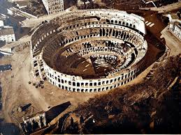
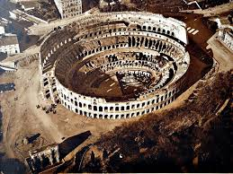
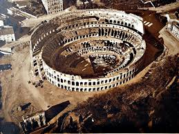

So today we decided to visit the Pantheon, it was pretty awesome on the
inside but those photos didn't turn out so well. I've included a picture
from the outside, you can see how crowded it was!
The Colosseum is also a must-see for any trip to Rome, it's huge! And it's
hard to get a photo which really captures how big it is. The line at the
colosseum was long, but if you buy tickets online and show the barcode on
your phone it's much faster. The museum inside was pretty awesome too, and
comes with an audio guide.
We found a little gladiator helmet at a souvenir store, so we had to buy
it for Federbear. It's a bit big and surprisingly heavy, we think it's
actually meant to be a paperweight.

As a last bit of fun, I'm not sure where this was from, but this Lion has the weirdest facial expression, and check out the tiny bird perched on top!